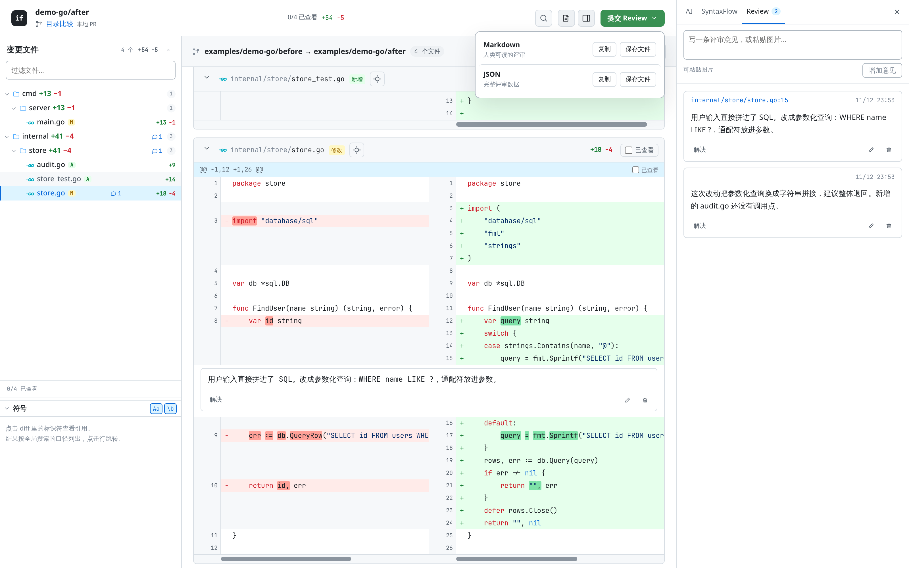
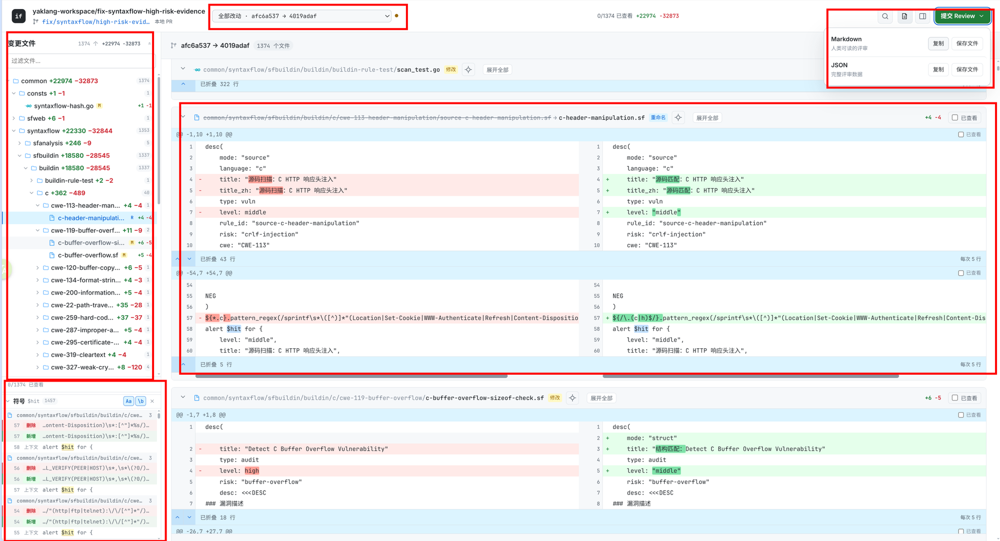

Local diff workbench for coding agents
Read the diff. Write the note. Hand it to the agent.
intentflow opens a local repository, shows every change as reviewable hunks, and turns your comments into one Markdown block you paste into Claude Code, Codex or pi.
- single static binary
- runtime needs only git
- reviews stay in the browser
One keystroke to the agent
The review leaves as Markdown with every path, side, line number and quoted line already in place.
- Ctrl+Enter
- Copies the whole review as Markdown without opening the menu. It stays quiet while the focus is in an input or a dialog.
- quoted code
- Each comment carries the code it refers to, so the agent sees the exact lines instead of a line number it cannot resolve.
- Markdown / JSON
- The same menu copies or saves both formats. JSON keeps the full document for tools that read it.
- paste
- Paste the block into Claude Code, Codex or pi. Nothing is submitted automatically.

Git ranges, not a file picker
The comparison comes from Git history. Renames stay one card, and viewed marks expire when the content moves.
- --base --head
- `--base main` compares main to HEAD, `--head WORKTREE` adds uncommitted and untracked files, and `--before ./a --after ./b` diffs two folders.
- detection
- With no `--base`, the nearest of `main`, `master`, `origin/main`, `origin/master` in HEAD history wins. If none is an ancestor, it stops and asks. It never falls back to `HEAD~1`.
- git diff -M
- Renames are read from `git diff -M --name-status`, so an old path and a new path show up as one card, not a deletion plus an addition.
- scope
- The header switches between all changes, the uncommitted worktree and a single commit. A diff digest drops viewed marks the moment the file changes.

Local first, in one binary
One executable with the frontend embedded. No service to run, no account, no state on disk.
- ./intentflow
- The frontend is embedded in the binary. Runtime needs `git` only; Node.js and pnpm are build-time dependencies.
- localStorage
- Reviews live in the browser under `intentflow.review.<comparison_id>`. Comment images are inline data URLs, up to 1.5MB each, stored with the review.
- session
- One repository, branch and subdirectory form a stable session, like a local pull request. The same branch name in another repository never collides.
- disk
- The server writes no files. Closing it loses nothing; the drafts stay in the browser.

Every reference, without a language server
Click any identifier in the diff. The left panel lists each place it appears across this comparison and jumps there.
- scope
- Every changed file in the current comparison, both sides. It is not a repository index and it is not LSP: no server, no index build.
- match
- Whole word by default, so `hit` does not match `hits`. A switch makes the match case-sensitive.
- rows
- Grouped by file, each row with a line number and an added, removed or context colour. Clicking a row moves the diff to that position.
- $hit → 1457
- In the screenshot the identifier `$hit` returns 1457 references across one comparison. That is a plain text match, not a resolved symbol graph.

Also in the workbench
- File tree with type icons, comment counts and per-directory progress.
- Line comments, multi-line selections and one overall comment.
- Global search across every diff file, with case and whole-word switches.
- Split or unified view, wrapping, and per-file horizontal scrolling.
- Virtualised rows and lazy file bodies, so a thousand-file range still opens.
- Keyboard: Ctrl+F to search, Ctrl+Enter to copy, arrow keys on the panel handles.
Install
Six v0.1.0 archives. Each holds one executable with the frontend inside.
tar -xzf intentflow_0.1.0_linux_amd64.tar.gz
sudo install -m755 intentflow /usr/local/bin/intentflow
intentflow versionExpand-Archive intentflow_0.1.0_windows_amd64.zip -DestinationPath .
.\intentflow.exe versionRuntime needs git only. No Node.js, pnpm or frontend build.
| Platform | Archive |
|---|---|
| Linux x86-64 | intentflow_0.1.0_linux_amd64.tar.gz |
| Linux ARM64 | intentflow_0.1.0_linux_arm64.tar.gz |
| macOS Intel | intentflow_0.1.0_darwin_amd64.tar.gz |
| macOS Apple Silicon | intentflow_0.1.0_darwin_arm64.tar.gz |
| Windows x86-64 | intentflow_0.1.0_windows_amd64.zip |
| Windows ARM64 | intentflow_0.1.0_windows_arm64.zip |
What ships today
Stage one is the tool above. Stages two to four are the target structure, not shipped features.
| Stage | Content | State |
|---|---|---|
| 01 | Text diff and a local review store | Available |
| 02 | SSA fact layer: project, logic and intent diff | Not started |
| 03 | Behaviour graph: trigger, decision, transform, effect | Not started |
| 04 | LLM narrative layer that only reads facts | Not started |
The AI and SyntaxFlow tabs are placeholders and report that they are inactive.